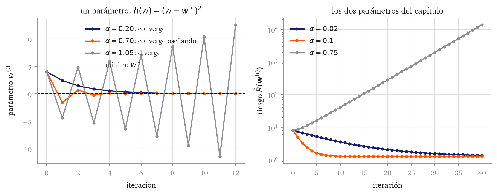

Para extraer la señal y poder realizar predicciones,buscamos los valores de \((w_0,w_1)\) que hacían más verosímiles los datos. La búsqueda sobre una rejilla permitió visualizar la idea, pero no constituye un método de aprendizaje viable.
Ejercicio 2.1 (El coste de buscar por rejilla) Supón que pruebas \(m\) valores distintos de cada parámetro y evalúas la verosimilitud en todas las combinaciones.
¿Cuántas evaluaciones hacen falta para una recta, que tiene dos parámetros?
¿Y para un modelo con \(q\) parámetros?
Con \(m=10\) y \(q=20\), calcula el número de evaluaciones. Compáralo con el número de segundos que han transcurrido desde el Big Bang, unos \(4\cdot10^{17}\).
La conclusión de Ejercicio 2.1 es que el número de evaluaciones crece como \(m^q\), de modo que la rejilla deja de ser viable en cuanto el modelo tiene unos pocos parámetros. Necesitamos reformular el aprendizaje como un problema que pueda resolverse sin enumerar los parámetros posibles. El proceso tendrá tres pasos:
convertir la verosimilitud en una función de coste, es decir; una función que nos indica la calidad de los valores de los parámetros (a mayor coste, peor calidad);
calcular cómo cambia ese coste cuando cambian los parámetros;
actualizar los parámetros en una dirección que lo reduzca.
Para ilustrar los conceptos de este capítulo, simularemos datos con la misma señal del capítulo anterior.
# Utilidades de figura que reutilizan varias secciones. El azul y el gris# son AZUL y GRIS_TENUE de capitulos/style.py.cmap_riesgo = LinearSegmentedColormap.from_list("riesgo", ["#151f6c", "#8f95b8", "#ececeb"])def malla_riesgo(x, y, w0_lim, w1_lim, resolucion=240): W0, W1 = torch.meshgrid( torch.linspace(*w0_lim, resolucion), torch.linspace(*w1_lim, resolucion), indexing="xy", ) predicciones = W0[..., None] + W1[..., None] * xreturn W0, W1, ((y - predicciones) **2).mean(dim=-1)def dibuja_superficie(ax, W0, W1, riesgo, excesos=(0.25, 1, 2.25, 4, 6)): niveles = (riesgo.min() + torch.tensor(excesos)).numpy() relleno = ax.contourf( W0.numpy(), W1.numpy(), riesgo.numpy(), levels=niveles, cmap=cmap_riesgo, extend="both", ) ax.contour( W0.numpy(), W1.numpy(), riesgo.numpy(), levels=niveles, colors="#8b8e95", linewidths=0.5, ) ax.grid(False) ax.set(xlabel=r"intercepto $w_0$", ylabel=r"pendiente $w_1$") ax.set_aspect("equal", adjustable="box")return rellenodef marca_minimo(ax, w0, w1): ax.scatter(w0, w1, marker="*", s=150, facecolor="white", edgecolor="black", linewidth=0.8, zorder=6)
De la verosimilitud a los mínimos cuadrados
Empecemos por el primer paso. La función que recorrimos sobre la rejilla era la log-verosimilitud del modelo lineal-gaussiano. Vamos a desarrollarla hasta ver qué parte de ella depende de los parámetros de la señal.
Teorema 2.1 (Desarrollo de la log-verosimilitud gaussiana) Bajo el modelo lineal-gaussiano definido en el capítulo anterior,
Miremos el resultado. El primer sumando no contiene \(\boldsymbol{w}\), así que es el mismo para cualquier señal que probemos. Todo lo que la verosimilitud dice sobre los parámetros de la señal está en el segundo sumando, y ahí \(\boldsymbol{w}\) solo aparece dentro de una suma de cuadrados de diferencias entre lo observado y lo predicho. Esa cantidad merece un nombre.
Definición 2.1 (Residuo y error cuadrático medio) El residuo de la observación \(i\) es
Ejercicio 2.2 (Demostración de la invarianza afín) Demuestra Lema 2.1. Toma dos valores cualesquiera \(\boldsymbol{w}_1\) y \(\boldsymbol{w}_2\) y comprueba que la transformación conserva el orden entre \(h(\boldsymbol{w}_1)\) y \(h(\boldsymbol{w}_2)\). Explica después por qué la hipótesis \(a>0\) es necesaria, dando un contraejemplo con \(a<0\).
Corolario 2.1 (Máxima verosimilitud y mínimos cuadrados) Para \(\sigma>0\) fijo,
El primer término no depende de \(\boldsymbol{w}\) y el coeficiente del error cuadrático medio es positivo. El resultado se obtiene aplicando Lema 2.1 y recordando que maximizar \(\ell\) equivale a minimizar \(-\ell\).
Ya tenemos la función de coste que pedía el primer paso: el error cuadrático medio. Buscar la señal más verosímil es buscar la que deja los residuos más pequeños, y eso es un problema de mínimos cuadrados.
NotaEl nivel de ruido queda fuera del foco
El resultado Corolario 2.1 vale para cualquier \(\sigma>0\) fijo, así que podemos aprender la señal sin decidir nada sobre \(\sigma\). Lo dejamos aparcado hasta el último apartado del capítulo.
La hipótesis gaussiana es la que ha producido el error cuadrático medio. Otra distribución generadora habría producido otra forma de medir el error, y conviene tratar esa idea por separado.
Funciones de pérdida
Una predicción transforma cada entrada \(x\) en un valor \(\widehat y=f_{\boldsymbol{w}}(x)\). Lo que acabamos de obtener es una manera concreta de cuantificar cuánto cuesta que \(\widehat y\) no coincida con la respuesta observada.
Definición 2.2 (Función de pérdida) Una función de pérdida\(\ell(y,\widehat y)\) asigna un coste numérico a predecir \(\widehat y\) cuando la respuesta es \(y\). Una predicción se considera mejor cuanto menor es su pérdida.
La pérdida que hemos deducido del modelo gaussiano es la pérdida cuadrática,
Hay otras. Por ejemplo la pérdida absoluta\(\ell_{\mathrm{abs}}(y,\widehat y)=\left\lvert y-\widehat y \right\rvert\), que crece de forma proporcional al error en lugar de castigar los errores grandes con más intensidad. Elegir una pérdida es decidir qué entendemos por una buena predicción.
Ejercicio 2.3 (Una pérdida distinta sale de un ruido distinto) La distribución de Laplace con centro \(\mu\) y escala \(b>0\) tiene densidad
Supón un modelo \(y_i=f_{\boldsymbol{w}}(x_i)+\varepsilon_i\) con \(\varepsilon_i\overset{\text{iid}}{\sim}\mathrm{Laplace}(0,b)\) y \(b\) fijo.
Escribe la log-verosimilitud de la muestra.
Repite el razonamiento de este apartado y comprueba que maximizarla equivale a minimizar el error absoluto medio \(\frac{1}{n}\sum_i\left\lvert r_i(\boldsymbol{w}) \right\rvert\).
Explica en una frase por qué esa pérdida se ve menos afectada que la cuadrática por una observación muy alejada del resto.
La pérdida evalúa un caso. El objetivo predictivo, en cambio, se refiere a casos futuros, y para hablar de ellos necesitamos describir de dónde salen los datos.
Riesgo poblacional y riesgo empírico
En el capítulo anterior separamos el proceso real que genera los datos, \(P^\star\), de la familia de modelos que proponemos. Toda observación, la de la muestra y la que llegará mañana, es una extracción de \(P^\star\). Escribimos \((X,Y)\sim P^\star\) para una observación nueva, tomada al azar del mismo proceso y con independencia de las que ya tenemos. Lo que nos interesa no es acertar en las observaciones que ya hemos visto, sino en esas.
Definición 2.3 (Riesgo) El riesgo, también llamado riesgo poblacional o de generalización, de los parámetros \(\boldsymbol{w}\) es la pérdida esperada sobre una observación nueva:
donde el subíndice indica que la esperanza se toma sobre una observación nueva \((X,Y)\) extraída de \(P^\star\).
El riesgo es lo que querríamos minimizar. Conviene saber desde ahora que no se puede llevar a cero: ni siquiera la señal verdadera predice el ruido de una observación futura, así que hay un suelo de error que ninguna elección de parámetros baja. En el capítulo dedicado a sesgo y varianza mediremos exactamente ese suelo.
Obsérvese dónde aparece cada cosa en Ecuación 2.3. La esperanza se toma sobre \(P^\star\), el proceso real; la familia de modelos solo entra a través de \(f_{\boldsymbol{w}}\). El criterio, por tanto, mide lo que nos importa aunque nuestra hipótesis sea falsa: no se evalúa el modelo contra sí mismo, sino contra la realidad. Eso tiene dos consecuencias, según que la familia contenga o no a \(P^\star\).
Si la contiene, se dice que el modelo está bien especificado, y al crecer la muestra los parámetros aprendidos se acercan a los que generaron los datos. Si no la contiene, el modelo está mal especificado, y al crecer la muestra los parámetros no se acercan a ninguna verdad, porque la verdad no está entre los candidatos: se acercan al mejor miembro de la familia, el que menos riesgo tiene. Que la familia sea falsa no estropea el criterio; lo que hace es poner un suelo a lo que se puede conseguir con ella.
El problema inmediato es otro: \(P^\star\) es desconocida, así que la esperanza de Ecuación 2.3 no se puede calcular. Solo disponemos de la muestra observada \(\mathcal{D}=\{(x_i,y_i)\}_{i=1}^{n}\). Si no podemos promediar sobre \(P^\star\), promediamos sobre los datos que sí tenemos.
Definición 2.4 (Riesgo empírico) El riesgo empírico de los parámetros \(\boldsymbol{w}\) sobre la muestra \(\mathcal{D}\) es la pérdida media observada:
El factor \(1/n\) hace que el criterio sea una pérdida media y permite comparar su magnitud entre muestras de tamaños distintos. No cambia el minimizador respecto a usar la suma.
Con pérdida cuadrática, el riesgo empírico es exactamente el error cuadrático medio de Definición 2.1:
Es decir, el problema de mínimos cuadrados al que llegamos desde la verosimilitud era ya un problema de minimización del riesgo empírico. A partir de aquí escribiremos \(\hat{R}(\boldsymbol{w})\), sin el subíndice de la muestra, y lo llamaremos riesgo cuadrático empírico.
Y no es casualidad que la verosimilitud haya acabado produciendo un riesgo empírico. Cualquier modelo probabilístico define una pérdida: si el modelo asigna a cada respuesta la densidad \(p(y\,\vert\,x;\vartheta)\), basta tomar \(\ell_{\log}(\vartheta;x,y)=-\log p(y\,\vert\,x;\vartheta)\). Como las observaciones se consideran independientes, el riesgo empírico de esa pérdida es
y minimizarlo es maximizar la verosimilitud. El modelo gaussiano da la pérdida cuadrática y el de Ejercicio 2.3 da la absoluta.
Queda una advertencia, y conviene entenderla bien. Estamos usando la misma muestra para dos cosas distintas: para elegir\(\hat{\boldsymbol{w}}\) y para medir cómo de bueno es. Cuando eso ocurre, la medida sale demasiado favorable. La intuición es la siguiente. El entrenamiento se queda con los parámetros que mejor encajan en la muestra de entrenamiento, con su ruido concreto. Parte de ese buen encaje se debe a la señal, y se repetirá en observaciones nuevas. Otra parte se debe a haber acertado con el ruido de estas observaciones, y no se repetirá, porque las observaciones nuevas traen su propio ruido. Al evaluar sobre los mismos datos, las dos partes cuentan por igual, pero la segunda es un espejismo.
El interpolador del capítulo anterior es el caso extremo de ese espejismo: el riesgo empírico es exactamente cero pero el modelo no tiene capacidad predictiva (no generaliza). Cuanto más flexible es la clase de modelos, más margen hay para ajustar ruido y más optimista resulta la medida.
En el capítulo dedicado a evaluación construiremos estimaciones honestas del rendimiento fuera de la muestra, y ahí quedará resuelto. Aquí nos centramos en el problema de entrenamiento, que es anterior: primero hay que saber minimizar el riesgo empírico.
Derivadas parciales y gradiente
Ya sabemos qué función queremos minimizar. Para la recta \(f_{\boldsymbol{w}}(x)=w_0+w_1x\), su riesgo cuadrático empírico es
Necesitamos saber cómo cambia este valor al modificar cada uno de sus dos parámetros.
Definición 2.5 (Derivada parcial) Sea \(h:\mathbb{R}^q\to\mathbb{R}\) y sea \(\boldsymbol{w}=(w_0,\ldots,w_{q-1})^{\mathsf{T}}\). Para \(j=0,\ldots,q-1\), la derivada parcial de \(h\) respecto de \(w_j\) es
si el límite existe. El vector \(\mathbf e_j\) vale uno en la coordenada \(j\) y cero en las demás.
Para calcular una parcial tratamos las demás coordenadas como constantes y aplicamos las reglas de derivación de una variable. Reunimos después todas las parciales en un vector.
Definición 2.6 (Gradiente) El gradiente de una función diferenciable \(h:\mathbb{R}^q\to\mathbb{R}\) es
Ejercicio 2.5 (Demostración del gradiente) Demuestra Ecuación 2.7.
Deriva Ecuación 2.6 respecto de \(w_0\) tratando \(w_1\) como constante, y aplica la regla de la cadena a cada sumando.
Repite el cálculo respecto de \(w_1\).
Apila las dos parciales y comprueba que obtienes la expresión del enunciado.
Escribe qué significa que las dos componentes sean cero, en términos de los residuos.
La fórmula se traduce a código con las tres piezas que reutilizaremos durante todo el curso: una clase que guarda los parámetros y sabe predecir, una función que mide el error, y una función que calcula el gradiente.
El modelo guarda los parámetros y expone predict. Es lo único que cambiará en los capítulos siguientes, cuando la señal tenga muchas variables.
2
La pérdida es una función suelta que recibe predicciones y respuestas. No depende del modelo, así que se puede cambiar sin tocar nada más.
3
La traducción literal de Ecuación 2.7. Dejará de hacer falta en cuanto sepamos calcular derivadas de forma automática.
Por ejemplo, en \(\boldsymbol{w}=(0,0)^{\mathsf{T}}\) el gradiente es
modelo = LinearRegression()grad_mse(modelo, x, y)
tensor([-2.1772, -5.6193])
La primera componente negativa indica que aumentar el intercepto reduce localmente el riesgo; la segunda, también negativa y de mayor magnitud, indica lo mismo para la pendiente. Para justificar esta lectura necesitamos entender la geometría del gradiente.
Geometría del gradiente
Una función diferenciable se aproxima localmente por una función lineal. Para un cambio pequeño \(\mathbf d\) en los parámetros,
\[
h(\boldsymbol{w}+\mathbf d)
=h(\boldsymbol{w})+\nabla h(\boldsymbol{w})^{\mathsf{T}}\mathbf d
+o\bigl(\left\lVert \mathbf d \right\rVert\bigr).
\tag{2.8}\]
El producto \(\nabla h(\boldsymbol{w})^{\mathsf{T}}\mathbf d\) aproxima el cambio en la función. Si restringimos la longitud del movimiento, el gradiente determina las direcciones que más aumentan y reducen ese valor.
Proposición 2.1 (Dirección de máximo descenso local) Si \(\nabla h(\boldsymbol{w})\neq\mathbf{0}\), entre todas las direcciones unitarias \(\mathbf u\), la que más reduce la función al movernos un poco es
Demostración. Movernos una distancia pequeña \(s>0\) en la dirección unitaria \(\mathbf u\) cambia el valor de la función, según Ecuación 2.8, en aproximadamente \(s\,\mathbf u^{\mathsf{T}}\nabla h(\boldsymbol{w})\). Como \(s\) es positivo, elegir la dirección que más reduce la función es elegir la que hace \(\mathbf u^{\mathsf{T}}\nabla h(\boldsymbol{w})\) lo más negativo posible.
Ese producto escalar se puede escribir con el ángulo \(\vartheta\) que forman los dos vectores:
donde la última igualdad usa que \(\mathbf u\) es unitaria. De los tres factores, la norma del gradiente es un número positivo que no depende de la dirección elegida. Lo único que podemos controlar es \(\cos\vartheta\), que vale como poco \(-1\).
Ese mínimo se alcanza cuando \(\vartheta=\pi\), es decir, cuando \(\mathbf u\) apunta en sentido exactamente opuesto al gradiente.
El mismo cálculo dice dos cosas más, que conviene retener. La dirección que más aumenta la función es la del gradiente, con \(\cos\vartheta=1\). Y las direcciones en las que la función no cambia, a primer orden, son las perpendiculares al gradiente, con \(\cos\vartheta=0\): son las que siguen la curva de nivel. Por eso el gradiente es perpendicular a las curvas de nivel.
Podemos verlo sobre las curvas de nivel del riesgo de nuestros datos. Cada curva une parámetros con el mismo riesgo.
Figura 2.1: El riesgo cuadrático empírico sobre el plano de los parámetros. El color da su valor y las líneas grises unen parámetros con el mismo riesgo. La estrella es el mínimo. Las flechas naranjas señalan la dirección de \(-\nabla\hat{R}\), normalizada, y el segmento negro discontinuo es perpendicular a ella. Ese segmento queda pegado a la curva de nivel, que es la lectura geométrica de la demostración.
Resolver que el gradiente sea cero
La geometría ya dice dónde puede estar un mínimo: en un punto donde el gradiente se anula, porque en cualquier otro sitio hay una dirección que reduce la función. Empecemos por lo general, válido para cualquier función diferenciable.
Definición 2.7 (Punto crítico y mínimo) Un valor \(\boldsymbol{w}^\star\) es un punto crítico de \(h\) si \(\nabla h(\boldsymbol{w}^\star)=\mathbf{0}\). Es un mínimo local si existe un entorno suyo en el que ningún otro punto tiene un valor menor, y es un mínimo global si \(h(\boldsymbol{w}^\star)\leq h(\boldsymbol{w})\) para todo \(\boldsymbol{w}\).
Teorema 2.3 (Condición de primer orden) Si \(h\) es diferenciable y \(\boldsymbol{w}^\star\) es un mínimo local, entonces \(\nabla h(\boldsymbol{w}^\star)=\mathbf{0}\).
Demostración. Para cada coordenada \(j\), definimos la función de una variable \(g_j(s)=h(\boldsymbol{w}^\star+s\mathbf e_j)\). Como \(\boldsymbol{w}^\star\) es un mínimo local de \(h\), \(s=0\) es un mínimo local de \(g_j\). La condición de primer orden en una variable implica
Esto se cumple para todas las coordenadas, luego \(\nabla h(\boldsymbol{w}^\star)=\mathbf{0}\).
El resultado necesita que alrededor de \(\boldsymbol{w}^\star\) haya margen: que podamos movernos un poco en cualquier dirección sin salirnos del conjunto donde buscamos. Aquí siempre se cumple, porque buscamos en todo \(\mathbb{R}^q\). Si hubiera restricciones y el mínimo cayera justo en el borde de la región permitida, el gradiente no tendría por qué anularse.
El recíproco no es cierto para una función cualquiera: \(h(w)=w^3\) tiene gradiente cero en \(w=0\), pero ese punto no es un mínimo.
Pasemos ahora al caso que nos ocupa. El riesgo cuadrático de una recta tiene una estructura mucho más favorable que una función arbitraria: no hay que preocuparse por mínimos locales ni por puntos de silla.
Proposición 2.2 (Los puntos críticos del riesgo cuadrático son mínimos globales) Si \(\boldsymbol{w}^\star\) es un punto crítico de Ecuación 2.6, entonces es un mínimo global. Si los valores \(x_i\) no son todos iguales, ese mínimo es único.
Demostración. Sea \(\mathbf d=(d_0,d_1)^{\mathsf{T}}\) cualquier desplazamiento. La predicción cambia en \(d_0+d_1x_i\), por lo que
El término central es \(\nabla\hat{R}(\boldsymbol{w}^\star)^{\mathsf{T}}\mathbf d=0\). El último término es no negativo, así que \(\hat{R}(\boldsymbol{w}^\star+\mathbf d)\geq\hat{R}(\boldsymbol{w}^\star)\) para todo \(\mathbf d\).
La igualdad solo puede ocurrir si \(d_0+d_1x_i=0\) para todas las observaciones. Si existen dos valores distintos de \(x_i\), al restar ambas ecuaciones se obtiene \(d_1=0\) y después \(d_0=0\). Por tanto, ningún otro parámetro alcanza el mismo mínimo.
Juntando las dos piezas: para la recta basta con resolver \(\nabla\hat{R}(\boldsymbol{w})=\mathbf{0}\), y cualquier solución de ese sistema es el mínimo que buscamos. Y en este caso el sistema se puede resolver con papel.
Ejercicio 2.6 (Resolver el sistema exactamente) Iguala a cero las dos componentes de Ecuación 2.7.
Comprueba que el sistema se puede escribir como \[
w_0+w_1\bar x=\bar y,
\qquad
w_0\bar x+w_1\overline{x^2}=\overline{xy},
\] donde la barra denota la media sobre las \(n\) observaciones.
Resuélvelo y comprueba que \[
\widehat w_1=\frac{\overline{xy}-\bar x\,\bar y}{\overline{x^2}-\bar x^2},
\qquad
\widehat w_0=\bar y-\widehat w_1\bar x.
\]
¿Bajo qué condición sobre los \(x_i\) tiene solución única? Relaciónalo con lo que dice sobre la unicidad Proposición 2.2.
Calcula \(\widehat w_0\) y \(\widehat w_1\) para los datos del capítulo con torch y compáralos con la señal generadora.
Con dos parámetros el sistema es de dos ecuaciones y se resuelve a mano. Con veinte parámetros sigue siendo lineal, y en el capítulo siguiente lo escribiremos con matrices. Pero en cuanto la señal deje de ser lineal en los parámetros, igualar el gradiente a cero producirá un sistema que no sabremos resolver. Necesitamos un método que se acerque al mínimo sin resolver nada exactamente.
Descenso de gradiente
El método que vamos a usar renuncia a resolver el sistema. En lugar de buscar de golpe el punto donde el gradiente se anula, parte de unos parámetros cualesquiera y los mueve un poco, una y otra vez, en la dirección que localmente más reduce el riesgo. Esa dirección ya la conocemos: es \(-\nabla\hat{R}\), por Proposición 2.1.
La idea (para montañeros): si no sabes dónde está el fondo del valle, baja por la pendiente.
Definición 2.8 (Descenso de gradiente) Dado un valor inicial \(\boldsymbol{w}^{(0)}\) y una tasa de aprendizaje\(\alpha>0\), el descenso de gradiente genera
Cada iteración hace dos cosas: evaluar el gradiente en los parámetros actuales y dar un paso en sentido contrario. La tasa \(\alpha\) decide la longitud del paso. Es el algoritmo entero.
Conviene verlo primero en una dimensión, donde el gradiente es una derivada y la geometría cabe en un dibujo.
Figura 2.2: Cinco iteraciones de descenso de gradiente sobre una función de un parámetro. La recta azul discontinua es la tangente en \(w^{(0)}\): su pendiente es la derivada, y es lo único que el algoritmo mira para decidir el primer paso. Los pasos son largos donde la pendiente es pronunciada y se acortan al acercarse al mínimo, porque la longitud del paso es proporcional a la magnitud de la derivada.
Esa figura enseña una propiedad que no es evidente en Ecuación 2.9: el algoritmo “frena” solo. Cerca del mínimo el gradiente es pequeño, así que los pasos se acortan sin que haya que programar nada. Y sugiere la garantía que buscamos, que un paso suficientemente corto siempre mejora.
Proposición 2.3 (Un paso suficientemente pequeño reduce el riesgo) Si \(\nabla\hat{R}(\boldsymbol{w})\neq\mathbf{0}\), existe \(\bar\alpha>0\) tal que
Ejercicio 2.7 (Demostración de que un paso pequeño mejora) Demuestra Proposición 2.3.
Define \(\phi(\alpha)=\hat{R}\bigl(\boldsymbol{w}-\alpha\nabla\hat{R}(\boldsymbol{w})\bigr)\), que es una función de una sola variable, y explica qué representa \(\phi(0)\).
Calcula \(\phi'(0)\) con la regla de la cadena y comprueba que vale \(-\left\lVert \nabla\hat{R}(\boldsymbol{w}) \right\rVert^2\).
Deduce el resultado a partir del signo de \(\phi'(0)\).
Explica por qué el enunciado no dice que cualquier \(\alpha>0\) funcione.
La proposición garantiza que existe un paso lo bastante corto, pero no dice cuál. Y la tasa importa: si es demasiado grande, el algoritmo sobrepasa el mínimo y puede alejarse de él. Los tres comportamientos se ven en el caso más sencillo, una parábola de un parámetro.
Código
def descenso_1d(w_inicial, lr, n_iter=12, a=1.0, w_estrella=0.0): w = torch.tensor(w_inicial) trayectoria = [w.item()]for _ inrange(n_iter): w = w - lr *2* a * (w - w_estrella) trayectoria.append(w.item())return torch.tensor(trayectoria)fig, ax = plt.subplots(1, 2, figsize=(9, 3.6))for lr, etiqueta in [ (0.20, r"$\alpha=0.20$: converge"), (0.70, r"$\alpha=0.70$: converge oscilando"), (1.05, r"$\alpha=1.05$: diverge"),]: trayectoria = descenso_1d(4.0, lr) ax[0].plot(trayectoria.numpy(), marker="o", ms=3, label=etiqueta)ax[0].axhline(0.0, color="black", linestyle="--", lw=1, label=r"mínimo $w^\star$")ax[0].set(xlabel="iteración", ylabel=r"parámetro $w^{(t)}$", title=r"un parámetro: $h(w)=(w-w^\star)^2$")ax[0].legend()modelo_tasa = LinearRegression()for lr in [0.02, 0.1, 0.75]: modelo_tasa.w = torch.zeros(2) riesgos = [mse(modelo_tasa.predict(x), y).item()]for _ inrange(40): modelo_tasa.w = modelo_tasa.w - lr * grad_mse(modelo_tasa, x, y) riesgos.append(mse(modelo_tasa.predict(x), y).item()) ax[1].plot(riesgos, marker="o", ms=3, label=fr"$\alpha={lr}$")ax[1].set_yscale("log")ax[1].set(xlabel="iteración", ylabel=r"riesgo $\hat R(\mathbf{w}^{(t)})$", title="los dos parámetros del capítulo")ax[1].legend()plt.tight_layout()

Figura 2.3: Izquierda: descenso de gradiente sobre \(h(w)=(w-w^\star)^2\), cuyo umbral de estabilidad es \(\alpha=1\). Una tasa por encima del umbral sobrepasa el mínimo en cada paso y aumenta la distancia hasta él. Derecha: lo mismo sobre el riesgo de los datos del capítulo, en escala logarítmica. Su umbral es \(\alpha\approx0.713\), así que \(0.75\) diverge y llega a un riesgo de unos catorce mil en cuarenta iteraciones, mientras que \(0.02\) es estable pero tan lenta que en cuarenta iteraciones todavía no ha llegado.
Ejercicio 2.8 (Los regímenes de la tasa de aprendizaje) Sea \(h(w)=a(w-w^\star)^2\), con \(a>0\) y \(w^{(0)}\neq w^\star\).
Comprueba que el descenso de gradiente satisface \(w^{(t)}-w^\star=(1-2\alpha a)^t\bigl(w^{(0)}-w^\star\bigr)\).
Deduce que la sucesión converge si y solo si \(\left\lvert 1-2\alpha a \right\rvert<1\), es decir, si \(0<\alpha<1/a\).
Describe qué ocurre en cada uno de estos casos: \(\alpha<1/(2a)\), \(\alpha=1/(2a)\), \(1/(2a)<\alpha<1/a\), \(\alpha=1/a\) y \(\alpha>1/a\).
Comprueba tus respuestas reproduciendo Figura 2.3 con otras tasas.
En la práctica no se calcula el umbral, entre otras cosas porque una función de varios parámetros no tiene una única curvatura. Se prueban unas pocas tasas separadas por factores de diez, por ejemplo \(0.01\), \(0.1\) y \(1\), y se mira la curva del riesgo a lo largo de las iteraciones: si sube o zigzaguea, la tasa es demasiado grande; si baja de forma casi imperceptible, es demasiado pequeña. Se toma la mayor que descienda de forma estable. En el capítulo dedicado a preparar los datos veremos que escalar las variables hace que esa elección sea mucho menos delicada.
Implementar el descenso de gradiente
Al modelo y a la pérdida les falta una tercera pieza: el optimizador, que guarda la tasa de aprendizaje y sabe dar un paso. Con eso, entrenar es escribir un bucle.
Esta separación en una clase para el modelo y otra para el optimizador es la praxis habitual, y es la que siguen PyTorch y scikit-learn. El modelo guarda los parámetros y sabe predecir; el optimizador guarda el modelo y sabe cambiarle los parámetros. Ninguno de los dos conoce la pérdida, que es una función suelta, ni el bucle, que vive fuera. Mantendremos esta interfaz hasta el final del curso, y por eso sus nombres van en inglés, igual que en esas dos bibliotecas.
Partimos de \(\boldsymbol{w}^{(0)}=(0,0)^{\mathsf{T}}\) y usamos \(\alpha=0.1\). Con el gradiente que calculamos antes, la primera actualización es aproximadamente
La trayectoria muestra qué significa entrenar: no se modifica directamente la recta hasta que parezca adecuada, sino que se desplazan sus parámetros para reducir un criterio definido con precisión.
Figura 2.4: Izquierda: la trayectoria sobre la superficie del riesgo, con un punto por iteración y flechas en las cuatro primeras. La estrella marca los parámetros que generaron los datos, \((1,2)^{\mathsf{T}}\), que no coinciden exactamente con el mínimo. Derecha: las 51 rectas correspondientes, superpuestas; donde el naranja es más denso, el algoritmo ha pasado más iteraciones.
Aquí hemos fijado el número de iteraciones para poder observar toda la trayectoria. En una implementación práctica se establece además una tolerancia y se detiene el algoritmo cuando el cambio de los parámetros o la mejora del riesgo son suficientemente pequeños.
Diferenciación automática
Hemos derivado a mano el gradiente de una recta. Son dos parámetros y dos derivadas parciales. Con veinte parámetros serían veinte, y con los modelos del final del curso la derivación a mano deja de ser razonable. Antes de seguir necesitamos una herramienta que calcule derivadas por nosotros, y conviene entender cómo funciona para no tratarla como una caja negra.
Un programa es una cadena de operaciones sencillas
Tomemos el riesgo de una sola observación, para que quepa en un dibujo:
Nadie calcula eso de una vez: el ordenador lo hace por partes, y cada parte es una suma, una resta o un producto. Poniendo nombre a los resultados intermedios,
Figura 2.5: El grafo de operaciones del riesgo de una observación. En azul, los parámetros respecto a los que queremos derivar; en gris, los datos, que son constantes; en naranja, el valor final. Cada caja dice qué operación la produce.
La regla de la cadena, recorrida hacia atrás
Para derivar \(h_4\) respecto a \(w_0\) y a \(w_1\) recorremos el grafo en sentido contrario, empezando por el final. En cada paso solo hace falta la derivada de una operación elemental, y se multiplica por lo que se traía acumulado:
Con los números de antes, \(h_3=-3\), así que las dos derivadas valen \(6\) y \(18\). Derivando directamente la expresión original se obtiene lo mismo: \(-2(y-w_0-w_1x)=6\) y \(-2x(y-w_0-w_1x)=18\). Los dos caminos coinciden, pero el segundo exige que alguien haga el álgebra y el primero no: solo hay que saber derivar sumas y productos.
Esto es la diferenciación automática en modo inverso: una pasada hacia delante que calcula los valores intermedios y una pasada hacia atrás que propaga las derivadas.
Por qué esto es barato
La pasada hacia atrás recorre cada flecha del grafo exactamente una vez, igual que la pasada hacia delante. Por tanto obtener el gradiente respecto a todos los parámetros a la vez cuesta un múltiplo pequeño y constante de lo que cuesta evaluar la función una sola vez, sin importar cuántos parámetros haya.
Cómo se usa en PyTorch
Se marca con requires_grad_() aquello respecto a lo que se quiere derivar, se calcula el valor, se llama a backward() y el resultado aparece en .grad. Comprobémoslo con un ejemplo que se puede derivar de cabeza: \(c=ab+a+b\), cuyas parciales son \(\partial c/\partial a=b+1\) y \(\partial c/\partial b=a+1\).
1a = torch.tensor(2.0, requires_grad=True)b = torch.tensor(3.0, requires_grad=True)2c = a * b + a + b3c.backward()print("dc/da =", a.grad.item(), " esperado:", 3.0+1)print("dc/db =", b.grad.item(), " esperado:", 2.0+1)
1
requires_grad=True marca los tensores respecto a los que se derivará. PyTorch registra a partir de ahí las operaciones en las que participan.
2
La pasada hacia delante. Al mismo tiempo se construye el grafo.
3
La pasada hacia atrás. Deposita cada derivada parcial en el .grad del tensor correspondiente.
Sustituye a grad_mse. La fórmula analítica ya no aparece por ningún sitio.
2
La actualización no debe formar parte del cálculo que estamos derivando. El contexto torch.no_grad() modifica los parámetros sin añadir esa operación al grafo.
3
PyTorch acumula gradientes por defecto. Los ponemos a cero antes de la siguiente iteración para que cada paso utilice solo el gradiente actual.
El bucle de entrenamiento no cambia, y el resultado tampoco.
modelo_auto = LinearRegression()modelo_auto.w = torch.zeros(2, requires_grad=True)historia_w_auto, historia_riesgo_auto = train( modelo_auto, AutogradOptimizer(modelo_auto, lr=0.1), x, y, n_iter=50)print("parámetros:", modelo_auto.w.detach())print("coincide con el gradiente manual:", torch.allclose(modelo_auto.w.detach(), modelo.w, atol=1e-4))
parámetros: tensor([1.0886, 2.0044])
coincide con el gradiente manual: True
Esta es exactamente la estructura que PyTorch ofrece de serie. torch.optim.SGD hace lo mismo que AutogradOptimizer, y a partir de aquí será lo que usemos.
la señal generadora \(f^\star(x)=1+2x\), utilizada únicamente porque simulamos los datos;
la señal estimada \(f_{\hat{\boldsymbol{w}}}(x)=\widehat w_0+\widehat w_1x\);
las respuestas observadas \(y_i\), que incluyen ruido.
Queda cerrar el asunto que aparcamos al principio. Aprender la señal no exigió decidir nada sobre \(\sigma\), pero el modelo gaussiano lo tiene entre sus parámetros y la verosimilitud también sabe estimarlo.
Teorema 2.4 (Estimación del nivel de ruido) Para \(\boldsymbol{w}\) fijo y \(\hat{R}(\boldsymbol{w})>0\), el valor de \(\sigma>0\) que maximiza la log-verosimilitud gaussiana satisface
Demostración. Partimos de Ecuación 2.2, donde ahora escribimos \(\hat{R}(\boldsymbol{w})\) en lugar de \(\mathrm{MSE}(\boldsymbol{w})\) porque son la misma cantidad. Tratando \(\boldsymbol{w}\) como fijo,
La derivada es positiva cuando \(\sigma^2<\hat{R}(\boldsymbol{w})\) y negativa cuando \(\sigma^2>\hat{R}(\boldsymbol{w})\). Por tanto, la log-verosimilitud crece hasta \(\sigma^2=\hat{R}(\boldsymbol{w})\) y decrece después; ese punto es su máximo global.
La lectura es directa: el nivel de ruido estimado es la raíz del riesgo que hemos conseguido. Y como Ecuación 2.10 vale para cualquier \(\boldsymbol{w}\), la estimación de \(\sigma\) no compite con la de la señal: primero se minimiza el riesgo y después se calcula \(\hat{\sigma}\).
Figura 2.6: Datos observados, señal generadora y señal aprendida minimizando el riesgo cuadrático empírico mediante descenso de gradiente. Los segmentos grises son los residuos, y \(\hat{\sigma}\) es la raíz de su media cuadrática.
Los parámetros estimados no coinciden exactamente con \((1,2)^{\mathsf{T}}\). No deberían hacerlo en una muestra finita: los datos contienen una realización concreta del ruido y \(\hat{\boldsymbol{w}}\) minimiza el riesgo de esa muestra. Con otras realizaciones obtendríamos otras estimaciones.
Hemos construido así nuestro primer algoritmo de aprendizaje completo. Sus cinco piezas, en el orden en que las hemos ido necesitando:
un modelo probabilístico, que dice de dónde salen los datos (Definición 1.6);
una pérdida, que se deduce de ese modelo (Definición 2.2);
un riesgo empírico, que promedia la pérdida sobre la muestra (Definición 2.4);
un gradiente, que dice en qué dirección moverse (Ecuación 2.7);
unos parámetros aprendidos, que salen de iterar la actualización (Ecuación 2.9).
Cada pieza depende solo de la anterior, y por eso se pueden cambiar de una en una. Cambiar la distribución del ruido cambia la pérdida y deja intacto el resto; cambiar la familia de señales cambia el gradiente y deja intacto el criterio.
Hasta ahora hemos trabajado en realizar predicciones cuando solo contamos con una variable predictora. En el siguiente capítulo, comenzaremos a trabajar con modelos de más de una característica.
Ejercicios
Ejercicio 2.9 (Dos iteraciones a mano) Considera los datos \((1,2)\), \((2,3)\) y \((3,5)\), los parámetros iniciales \(\boldsymbol{w}^{(0)}=(0,0)^{\mathsf{T}}\) y \(\alpha=0.1\). Calcula dos iteraciones de descenso de gradiente utilizando Ecuación 2.7. Anota en cada una las predicciones, los residuos, el gradiente, los nuevos parámetros y el riesgo.
Ejercicio 2.10 (Comparar tasas de aprendizaje) Entrena el modelo del capítulo con \(\alpha\in\{0.02,0.1,0.75\}\) usando train y GradientDescentOptimizer. Representa el riesgo durante las primeras 40 iteraciones y explica las diferencias. Comprueba qué ocurre con \(\alpha=0.75\) y relaciónalo con lo que pide demostrar Ejercicio 2.8.
Ejercicio 2.11 (Acumulación de gradientes) Elimina la línea self.modelo.w.grad.zero_() de AutogradOptimizer y registra tanto el riesgo como la norma del gradiente almacenado durante veinte iteraciones. Explica por qué la actualización ya no corresponde a Ecuación 2.9 aunque cada llamada a backward() sea correcta.
Ejercicio 2.12 (Escala del criterio) Para \(\sigma\) fijo, implementa la log-verosimilitud negativa de Ecuación 2.2 y comprueba que su minimizador coincide con el del riesgo cuadrático. Compara sus gradientes para \(\sigma\in\{0.5,1,3\}\) y deduce cómo debería cambiar la tasa de aprendizaje para mantener actualizaciones de tamaño semejante.